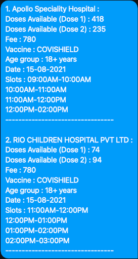

Project information
- Category: Automation
- Authors: @aadhityasw
- Project date: June, 2021 - August, 2021
- Project URL: Github Repository
-
Tags:
Automation
twitter
cowin
python-script
tweepy
covid-vaccines
Vaccine Alert System
Provides First Hand Real Time Updates on vaccine stats to your palms.


Description
Choose a location, and key in your twitter username to set this up, and it just does the rest for you. This is a simple to use and easy to understand experiment that utilizes the power of a variety of tools and places these pieces correctly to make a powerful bot that automaticallu fetches the vaccine stats in your city and updates you on your preferred time.
The tech stack that powers this bot is rather simple to use set of technologies which power this bot :
- COWIN API (provided by APIsetu)
- Twitter Developer Tools (API's)
- Tweepy (To interact with Twitter API's)
- Github (For hosting the project)
- Python Programming Language (To glue the pieces together)
- Github Actions (For deployment)
Let's dwelve into detail how each part contributes to the bigger picture :
1. COWIN API
The COWIN Web portal houses the real time date on the vaccine availability in centers throughout India. They also use this data to schedule vaccinations and keep track of all individual's vaccination information. All the real time data on vaccine availablity and the vaccination centers are made available through API's provided and managed by APIsetu. They also provide API's for the scheduling for vaccination through any of their centers, but we are currently not untilizing these features.
In this project, we use their location API's in order to know the district code for our location, we then key in this number into their vaccine tracker API's to get real time stats of vaccine availability in our location.
This is a sample output JSON which is returned due to the API call when the query is successful :
{
"sessions": [
{
"center_id": 1234,
"name": "District General Hostpital",
"name_l": "",
"address": "45 M G Road",
"address_l": "",
"state_name": "Maharashtra",
"state_name_l": "",
"district_name": "Satara",
"district_name_l": "",
"block_name": "Jaoli",
"block_name_l": "",
"pincode": "413608",
"lat": 28.7,
"long": 77.1,
"from": "09:00:00",
"to": "18:00:00",
"fee_type": "Paid",
"fee": "250",
"session_id": "3fa85f64-5717-4562-b3fc-2c963f66afa6",
"date": "31-05-2021",
"available_capacity": 50,
"available_capacity_dose1": 25,
"available_capacity_dose2": 25,
"walkin_ind": "Y",
"min_age_limit": 18,
"vaccine": "COVISHIELD",
"slots": [
"FORENOON",
"AFTERNOON"
]
}
]
}
References
- COWIN Portal : cowin.gov.in
- APIsetu : apisetu.gov.in
2. Twitter Developer Tools
Twitter here is used as a messaging tool to reach the end users and enable them to gain instant access to the message that our main script constructs regarding the real time vaccine details. The usage of twitter here can be replaced with any of numerous available messaging services like Whatsapp, Facebook Messenger, Discord, etc or we can also deliver our messages as emails to the user's inbox through Mailgun or any other easy to use mailing services that we can integrate easily.
In order to proceed, you would need a twitter developer account. Head on to the Twitter Developer Portal and apply for a developer account. You would be asked to fill a form and mail them stating how you will be using their Developer API's. After you do so, twitter's support team will clear you and create a new developer account for you to use. Once you get this done, you would have to
create a new standalone app from the dashboard, and save the credentials -- Consumer Keys (API Key, API Secret) and the Authorization Tokens (Bearer Token, Access Token, Access Secret). Make sure that the access tokens have both Read, Write, and Direct Message permissions. These credentials will be used at a later stage when we integrate all the parts together.
References
- Twitter Developer Portal : developer.twitter.com
3. Tweepy
Once we have obtained the twitter credentials, we use the Tweepy library to interact with their API's. We can bypass this and make direct HTTP requests to the Twitter API's, but the process of setting this up with the authourizations is more complicated. So we use this tweepy library to handle all the low level implementations and use this to interact with the twitter API's. We will have to key in all the credentials saved in the previous stage here.
The Tweepy has the following lines of code as their setup procedure and to send a direct message to any twitter user :
# Authenticate access
auth = tweepy.OAuthHandler(consumer_key, consumer_secret)
auth.set_access_token(key, secret)
# Create API handler
api = tweepy.API(auth)
# Get the userid of the reciever
user = api.get_user("user_name of recipient")
recipient_id = user.id_str
# Send a DM
api.send_direct_message(recipient_id, "Hello")
4. Github
We use the version control system git to manage the development and the deployment (more on this later). We use the popular site Github to host our repository. There are a few alternatives, like Gitlab, Altassian, etc which you are free to use. This step is optional, but it is necessary if you are following this procedure to setup as I have used Github Actions for deployment and it requires the code to stay in a github repository. If you dont have a github account, go to the github website and create a new account. Once this is done, head to the repository hosting this code in my account at this link and click on the fork option there to have a copy of this repository forked into your account.
Once this is done head over to your forked repository, and have a look at the code there. This is your copy of the code, and any changes you make here will not reflect on the main repo. So feel free to make any changes here and experiment with it as you wish. If you have added a new feature or sqashed a bug or have improved the repository in any way, feel free to raise a Pull Request right from your fork, and I will review it. If you have found a bug, or you feel any feature is missing and can be added, but are not sure how to proceed or are stuck while implementing anything, raise an issue in the root repository, and we will discuss a way to move forward. And if you are willing to contribute to this repository, refer to the Contribution file for more details of how you can do so.
Once you have done this, clone a copy of your fork to your local desktop, in order to do this click on the Clone or dowmload option in your fork, choose a location to setup, and use the Github Desktop to do so if you do not have previous experience in cloning repos.
References
- Github : github.com
- My Repository : github.com/aadhityasw/cowin-twitter-bot
- Forking a Repo in Github : Fork a Repo
- Pull Requests in Github : Creating a Pull Request
- Cloning a repository: Cloning a repository
5. Python Programming Language
Until now, we have touched upon the core aspects that we use to build our product, but we need a script that can integrate all these individual entities and produce a working product.
The current version has a few key features :
- Automatic switching of the day of query - if the time of making the API call is after
4PM, the script automatically fetches the details for the next day. - We can get the real time stats on any vaccine --
COVISHIELD,SPUTNIK VorCOVAXINas per our choice. - A
Playgroundfile has been provided which can be used to find the location codes for you locality using the COWIN API's. Note theStateand theDistrictcodes down as it will be used during deployment. - Use the
PlaygroundNotebook to understand the code, and to play around with it. It is organized into sections each pertaining to a task. - Use the main file to specify the
min_agecrieteria for vaccination to better find the best center for you.
6. Github Actions
Github Actions is used for deploying the script. Once the script is ready, we need a medium to run it frequently in intervals of our choice automatically. This is taken care by the actions provided by github because of the ease of the deployment process. We are only required to program the procedure to run the workflow, and the rest is taken care by the actions interface. We code in the details in the Workflow file.
We cannot have the API keys be stored in public, and for this we use the Github Encrypted secrets to save the keys and values safe in the repository. We add them as environmental variables in the workflow file. Once these become environmental variables, they can be accessed in python using the os library. In order to do this, go to the secrets in your github repository from your browser, and add all the DISTRICT_ID, TWITTER_CONSUMER_KEY, TWITTER_CONSUMER_SECRET, TWITTER_ACCESS_KEY, TWITTER_ACCESS_SECRET, TWITTER_RECIPIENT_USER_NAME using the same variable names, and with the values collected from the previous stages.
Actions also allow us to specify the intervals in which the job runs, we follow a cron job syntax, and can be designed easily using the crontab guru web portal. Note that the time specfied here would be the standard UTC time.
With this done and customized, push these changes to your github repository, and see your code in action :)
7. Logging Progress
We also have a log file in the logs folder, which has a detailed entry of the results of a particular running instance of the code, which can be used for debugging when any error occurs.
The vaccine_centers.txt file in the logs folder contains the list of the latest fetched vaccination centers based on our conditions.
Results
Once you have deployed the code, check out your twitter direct message feed, and you would have recieved a message from the account linked with the developer account you registered for, with the details of the vaccination centers and the availablity and timings. You can use this information to register in the COWIN Web portal (for now, as this feature might be added at a later stage 😁).
The following image is a sample of how a sample Twitter DM message looks like :

With this done, have a safe and quick hassle-free vaccination experience 😷.